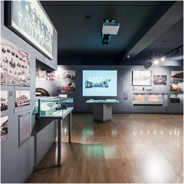
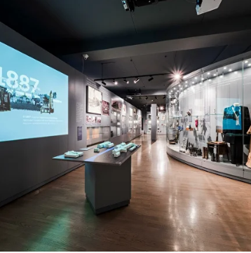

История музея
Музей истории Екатеринбурга был создан на базе музея Якова Свердлова, который открылся в 1940 году. Первая экспозиция была практически полностью посвящена основным вехам деятельности Свердлова: революционной борьбе, аресту, работе в заключении, восхождению к вершинам власти, ранней смерти в возрасте 33 лет.

В 1973 году обновляется экспозиция музея он становится одной из главных «церемониальных» площадок города: в помещениях музея проводятся торжественные и тематические линейки, пионерские сборы, приемы в пионеры, вручение комсомольских билетов, принимается воинская присяга.
В 1991 году музей Я.М. Свердлова перестал существовать, превратившись в Музей общественно-политических движений Урала. В 1992 году музей переименовали в Музей политической истории Урала. И только в 1995 году музей был официально переименован в Музей истории Екатеринбурга.
В 1993 году у музея появляется вторая площадка - Фотографический музей "Дом Метенкова" (здание на К.Либкнехта, 36)
В 1995 году Музею истории Екатеринбурга была передана Водонапорная башня на Плотинке (здание на Горького, 4в)
В 2016 году в состав музея вошел Мемориал памяти жертв политических репрессий (находится на 12 километре Московского тракта)
В 2018 году Музей истории Екатеринбурга получил еще одну площадку - дом Маклецкого (здание на Тургенева, 15)
В 2021 году Музею было передано здание по адресу Ленина, 52 / Бажова, 124а, сегодня там размещается Креативный кластер "Л52"